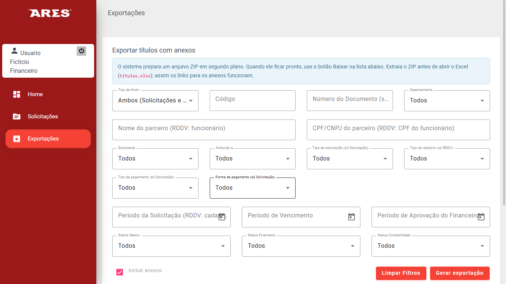
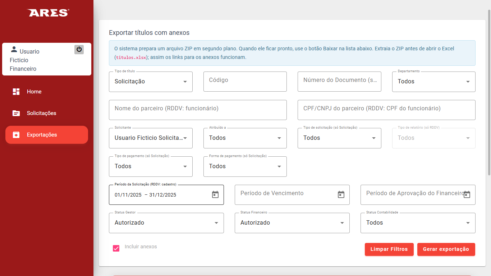
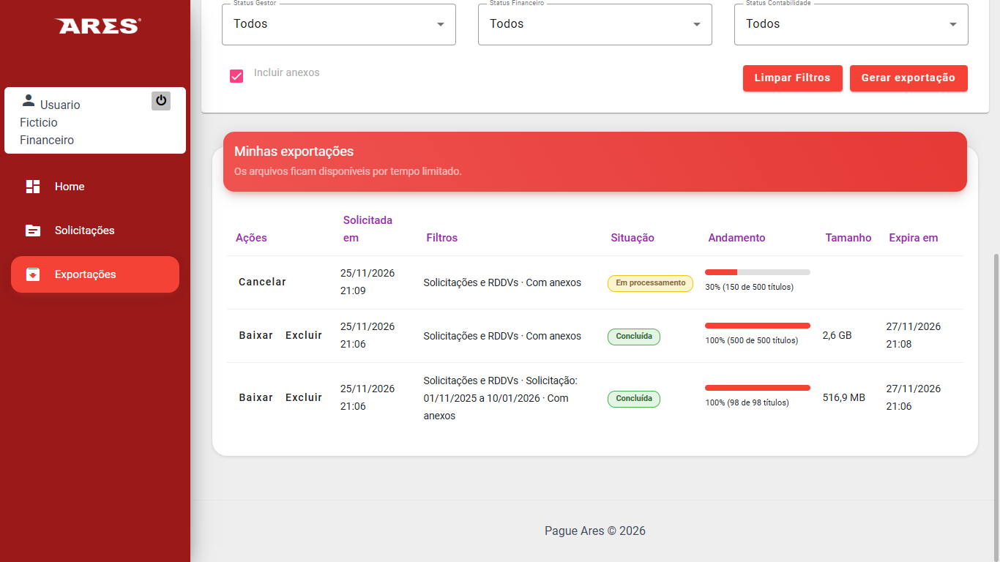
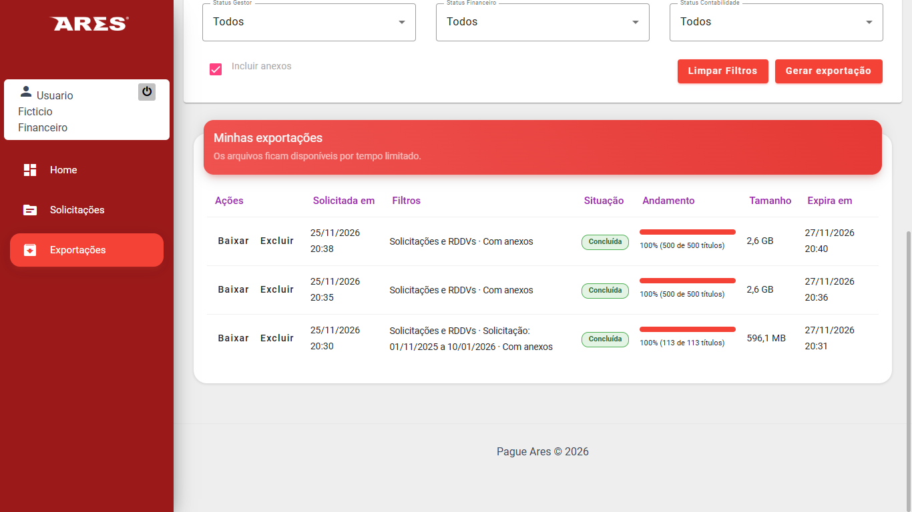
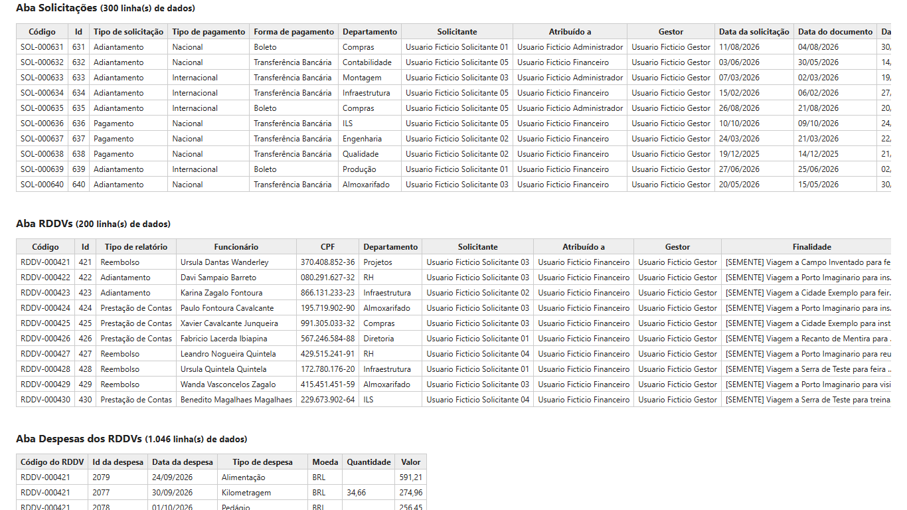
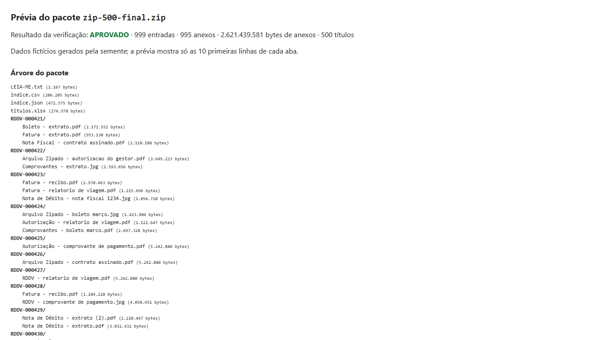
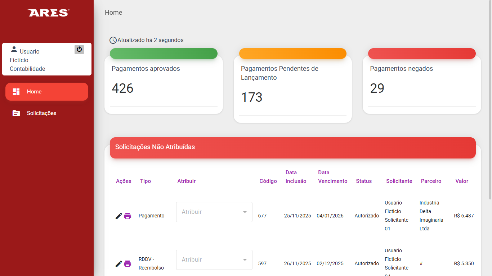
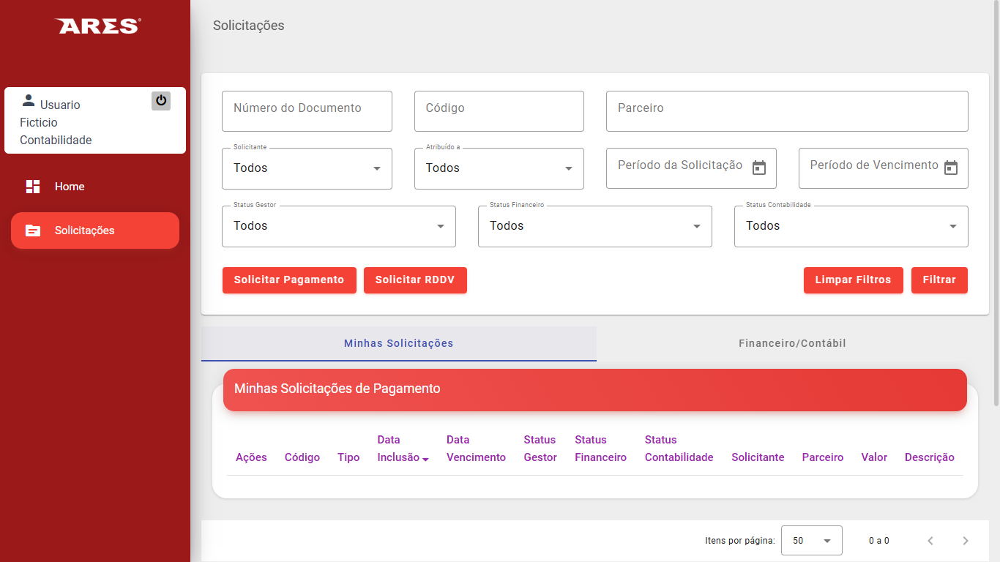
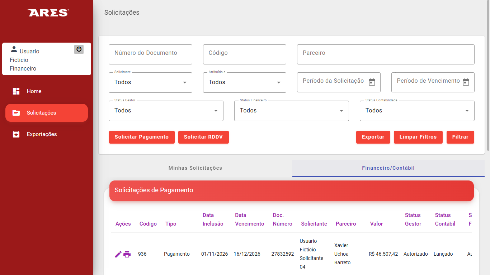

PagueAres · Documento de entrega para a equipe do Financeiro · Novembro de 2026
Este documento mostra o que foi pedido, o que foi entregue e como usar a nova tela Exportações. A funcionalidade foi criada para reunir, num único arquivo, os títulos e os anexos que serão compartilhados com a auditoria externa.
| Pedido | Entregue |
|---|---|
| Excel com as informações dos títulos e as datas de aprovação | Entregue. A planilha titulos.xlsx tem quatro abas: Solicitações, RDDVs, Despesas dos RDDVs e Anexos. Para cada título há a situação e a data e hora de aprovação do Gestor, do Financeiro e da Contabilidade, com as observações de cada setor. |
| Anexos de cada título | Entregue. Todos os anexos do título vão dentro do pacote, com o mesmo conteúdo enviado no PagueAres. |
| Uma pasta por título, com o código do PagueAres | Entregue. Cada título com anexo ganha uma pasta com o seu código, por exemplo SOL-000631 (solicitação) ou RDDV-000421 (relatório de despesas de viagem). Cada anexo recebe o nome do tipo de documento seguido do nome original, como Nota Fiscal - boleto março.pdf. |
| Ligação entre a planilha e os arquivos | Entregue. O código do título na planilha é um link para a pasta, e a aba Anexos tem um link para cada arquivo. Os links só funcionam depois de extrair o ZIP. |
| Índice para conferência e análises futuras | Entregue. O pacote traz o indice.csv (abre no Excel) e o indice.json (para análises por programa). Os dois listam cada arquivo com o tamanho e um código de conferência: se o arquivo mudar um único byte, o código muda. Assim a auditoria confere que nada foi alterado. |
| Funcionar mesmo com muitos anexos | Entregue. O arquivo é preparado em segundo plano, sem travar a tela, e a pessoa acompanha o andamento na própria tela. |
| Quem pode usar | Entregue. Somente os perfis Financeiro e Administrador. |
| Dados completos | Entregue. CPF, banco, agência e conta saem completos na planilha, como o pedido previa. |
Além do pedido, o PagueAres passou a ler as datas digitadas no formato brasileiro em todas as telas (veja a última página).
Você precisa entrar no PagueAres com um usuário do perfil Financeiro ou Administrador.




Ao baixar, você recebe um único arquivo ZIP. Dentro dele:
| Item | O que é |
|---|---|
| LEIA-ME.txt | Instruções curtas, data de geração e os filtros usados. |
| titulos.xlsx | A planilha com as quatro abas: Solicitações, RDDVs, Despesas dos RDDVs e Anexos. |
| indice.csv e indice.json | Lista de todos os anexos com tamanho e código de conferência de cada arquivo. |
| SOL-000631/, RDDV-000421/ ... | Uma pasta por título que tenha anexos, com os arquivos dentro. |


Se um título tiver dois anexos com o mesmo nome, o segundo recebe (2) no fim, para que nenhum arquivo seja substituído. O código de conferência pode ser recalculado por qualquer programa de verificação e comparado com o do índice.
Só os perfis Financeiro e Administrador veem o item Exportações no menu e conseguem gerar pacotes. Os demais perfis, como Contabilidade, Gestor e Solicitante, não veem o item. Quem digitar o endereço da tela mesmo assim volta para a lista de solicitações.



Ao revisar o que já existia, foram corrigidos pontos antigos que afetavam as exportações e a visualização de anexos:
Os testes foram feitos num ambiente separado, com dados fictícios, no volume esperado de um mês de operação.
| O que foi testado | Resultado |
|---|---|
| 500 títulos com 2,6 GB de anexos | Pacote pronto em cerca de 1 min 32 s e baixado em cerca de 12 s. |
| 100 títulos (98 encontrados, 194 anexos, 514 MB) | Pacote pronto em cerca de 20 s e baixado em cerca de 3 s. |
| Uso de memória do servidor | No máximo cerca de 375 MB mesmo com 2,6 GB de anexos, porque os anexos são lidos um de cada vez. O uso de memória fica estável mesmo em exportações grandes. |
| Conferência do pacote de 500 títulos | Aprovado. Foram conferidas 16 regras, entre elas estrutura de pastas, nomes dos arquivos, abas e colunas da planilha, links e totais. O tamanho e o código de conferência dos 995 anexos foram recalculados e batem com o índice. |
| Reinício do servidor no meio de uma exportação | Aprovado. A exportação ficou como Falhou com mensagem clara, não sobrou arquivo pela metade, e uma nova exportação foi concluída normalmente. |
| Segurança com usuários de cada perfil | Aprovado. Sem login ou com perfil Contabilidade, Gestor ou Solicitante, o acesso é negado. Um Administrador não enxerga a exportação de outra pessoa. O link de download funciona uma vez; na segunda tentativa é recusado. |
| Testes automáticos do sistema | Aprovado. Mais de 350 testes automáticos do servidor e mais de 110 da tela, sem falhas na rodada completa de verificação. Os testes de segurança foram escritos antes da correção e primeiro mostraram a falha. |
Os tempos foram medidos num computador de testes. No servidor do cliente podem variar um pouco, conforme a máquina e a rede.
Durante os testes, notamos que o PagueAres lia algumas datas digitadas como mês/dia (por exemplo, 05/12/2025 virava 12 de maio). Isso já existia e valia para várias telas. Agora as datas digitadas são lidas como dia/mês/ano em todo o sistema: Exportações, Solicitações, Nova solicitação e RDDV. O botão Limpar Filtros também passou a apagar o texto dos campos de data.